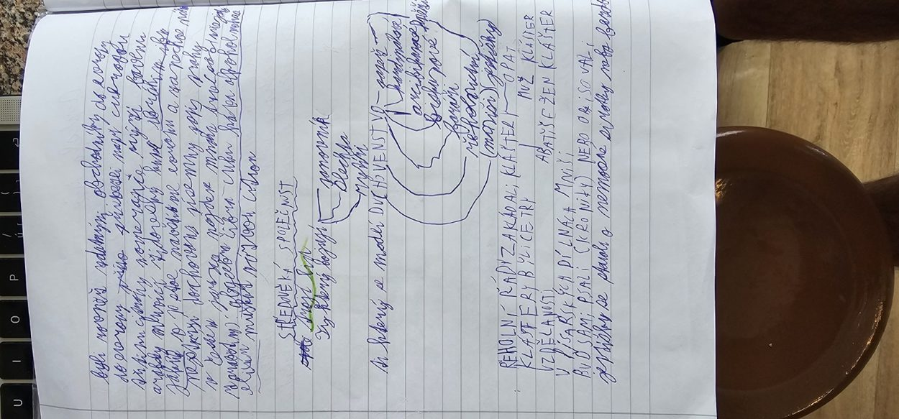

Středověká společnost a církev

Tři skupiny společnosti
Středověcí autoři často používali zjednodušený model tří skupin:
- Duchovenstvo – ti, kteří se modlí.
- Šlechta – ti, kteří bojují a chrání.
- Pracující obyvatelé, zejména rolníci – ti, kteří pracují a zajišťují obživu.
Skutečná středověká společnost však byla pestřejší. Ve městech žili například řemeslníci, kupci, obchodníci, nádeníci a služebnictvo.
Duchovenstvo
V západní církvi stál na vrcholu papež. Pod ním působili arcibiskupové, biskupové a kněží. Mniši a jeptišky žili v klášterech podle pravidel řádu.
Kláštery
Kláštery byly místy modlitby, ale také práce, vzdělávání, hospodaření, péče o nemocné a opisování knih. Díky tomu se zachovalo mnoho starších textů.
| Řád |
Co si vybavit |
| Benediktini |
Kláštery; modlitba a práce (ora et labora) |
| Cisterciáci |
Přísný řeholní život; hospodaření |
| Premonstráti |
Klášterní život a duchovní služba |
| Františkáni |
Dobrovolná chudoba, kázání, pomoc lidem |
| Dominikáni |
Kázání, vzdělání, studium teologie |
Františkáni a dominikáni patřili k žebravým řádům a významně působili ve městech.
Zapamatuj si
Kněz se modlí, rytíř bojuje, rolník pracuje. V klášteře mnich nejen žije nábožensky, ale také opisuje rukopisy.